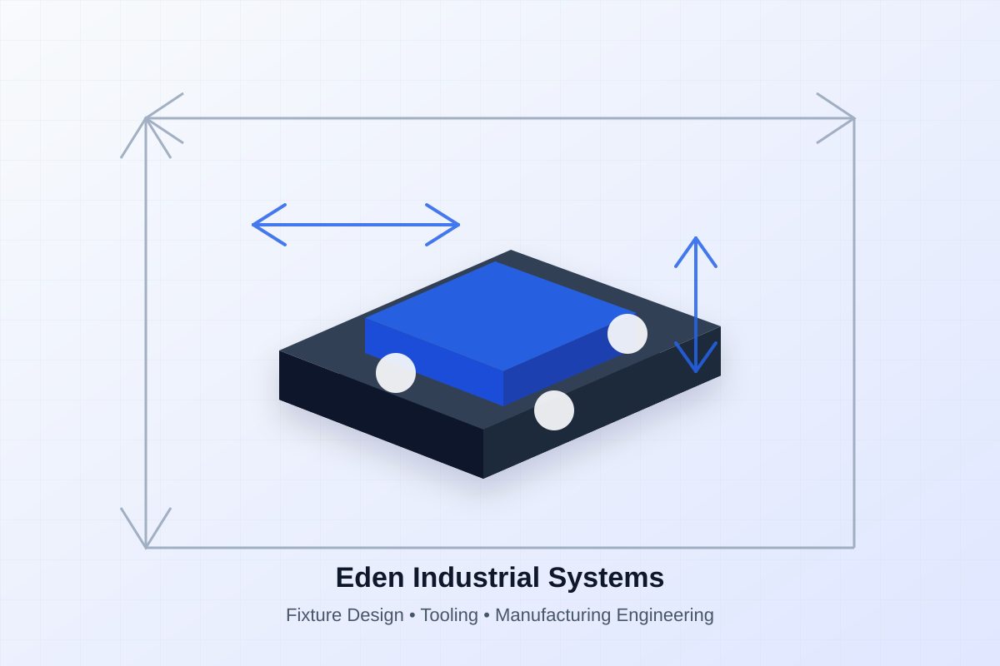

Engineered for Manufacturing
Solutions designed for the shop floor and built to perform.
Fixture Design & Manufacturing Engineering
Eden Industrial Systems designs custom fixtures, workholding, production tooling, and mechanical systems that reduce setup time, improve repeatability, and keep production moving.

Solutions designed for the shop floor and built to perform.
Smarter tooling that reduces variation and increases output.
Anticipate production issues and design them out early.
Practical documentation for fabrication, review, and use.
Services
Support for manufacturers that need buildable, usable solutions—not just clean CAD models.
Purpose-built fixtures that improve repeatability, reduce setup time, and make production easier for operators.
Extra engineering bandwidth for teams solving production problems or improving existing processes.
Mechanical systems and production aids designed around the realities of your process, people, and floor space.
Example Work
Fixture Design
Flexible workholding concepts that improve part location, setup speed, and repeatability.
Manufacturing Support
Review parts and assemblies for manufacturability, fabrication risk, and production efficiency.
Assembly Tooling
Tooling and workstation concepts that reduce manual alignment and improve operator workflow.
Custom Equipment
Mechanical systems and production tools designed to remove friction from manufacturing operations.
Our Process
Review your goals, constraints, process, and production challenge.
Develop practical, manufacturable concepts for review.
Refine the design for access, usability, fabrication, and use.
Prepare drawings, documentation, and vendor-ready details.
About Eden Industrial Systems
Eden Industrial Systems provides fixture design, tooling, custom equipment, and manufacturing engineering support to help manufacturers build more efficiently.
The work is grounded in practical manufacturing knowledge: how a tool is loaded, clamped, adjusted, machined, inspected, fabricated, and used by operators every day.
Start a ProjectCore Capabilities
Serving Manufacturers
Fixture design, tooling, and manufacturing engineering support.